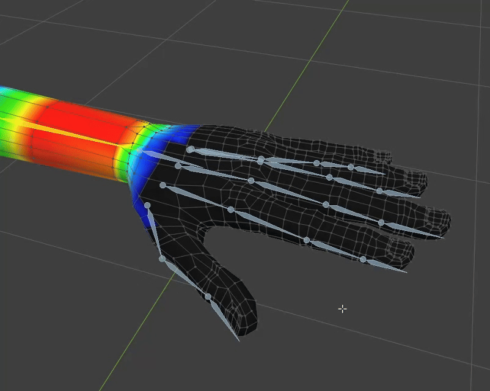
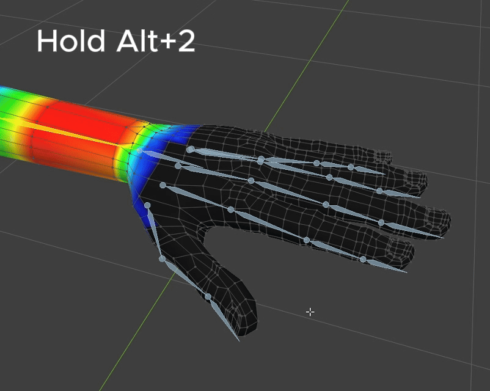
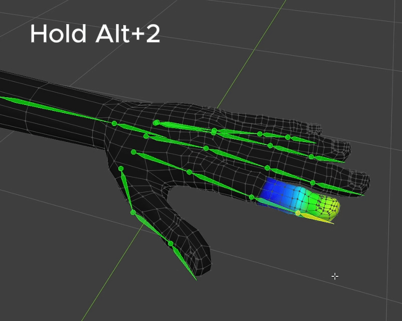
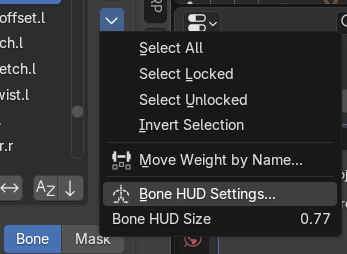

Bone Picker Shortcut¶
You can select a vertex group through the Deform Bone List, but in most cases it's faster to select it directly through the Bone shown in the viewport.
Hold Alt + 2 to enter Bone Picker mode.
While in Bone Picker mode, you have these additional shortcuts:



- Release Alt + 2 : Selects whichever bone is currently hovered.
- Left Click: Adds bones to the selection (multi-selection).
- Middle Click: Deselects bones from the selection.
- Right Click (Cancel): Cancels bone picking mode.
Bone Size / Always Show Bone HUD¶
